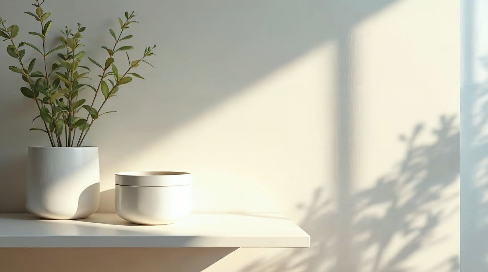
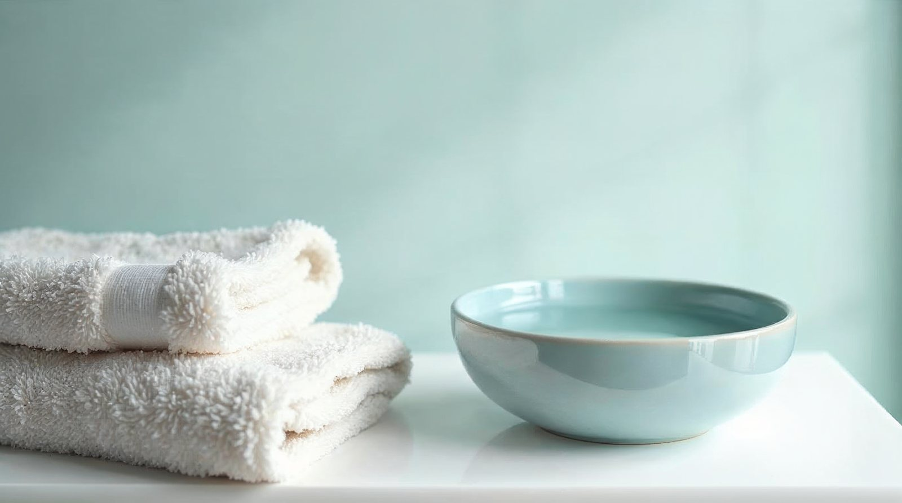
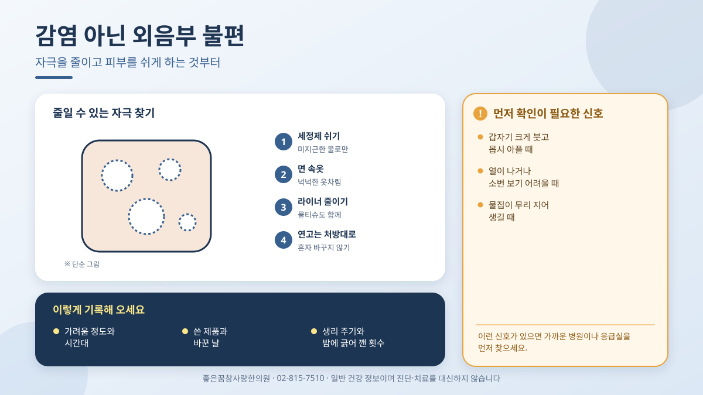

이종호 한의사 감수좋은꿈참사랑한의원 대표원장 (한의사 면허번호 19769)발행 2026-11-26 · 수정 2026-11-26
이 글의 차례
하루 종일 의자에 앉아 일하는 동안 아래가 자꾸 신경 쓰입니다. 가렵기도 하고, 따끔거리기도 하고, 어떤 날은 화끈거리기까지 합니다. 혹시 질염인가 싶어 산부인과에 다녀왔는데 검사에서 균은 없다는 말을 들었습니다. 다행이다 싶다가도, 그럼 이 불편은 대체 뭘까 하는 마음에 다시 답답해집니다.
외음부의 가려움과 통증은 누구에게 쉽게 털어놓기 어려운 고민입니다. 그래서 혼자 여러 가지 세정제나 연고를 바꿔 가며 써 보다가 오히려 더 불편해진 채로 진료실에 오시는 분도 많습니다. 저는 이런 분들께 먼저 그동안 무엇을 써 오셨는지부터 천천히 여쭙니다.
감염이 아닌데도 외음부가 가렵고 따가운 이유는 생각보다 다양합니다. 피부가 자극을 받았거나, 건조해졌거나, 피부 질환이 그 부위에 생겼거나, 신경이 예민해진 경우 등입니다. 이 글에서는 그 이유들을 하나씩 나누어 보고, 생활에서 줄일 수 있는 자극과 함께 살필 부분을 정리해 보려 합니다.
왜 감염이 아닌데도 가렵고 따가울까요
외음부 피부는 얇고 습기가 많으며, 소변과 생리혈, 땀, 마찰에 늘 노출되어 있습니다. 그래서 다른 부위보다 자극에 쉽게 반응합니다. 가장 흔한 이유는 바로 이 자극입니다. 향이 있는 세정제나 비누, 자주 하는 세정, 물티슈, 생리대나 팬티라이너의 재질, 꼭 끼는 옷이 피부의 보호막을 약하게 만듭니다.
보호막이 약해지면 작은 자극에도 가렵고 따가워지고, 가려워서 긁거나 세게 씻으면 보호막이 더 약해지는 고리가 생깁니다. 많은 분이 가려울수록 더 깨끗이 씻으려 하시는데, 이것이 오히려 불편을 오래 끌고 가는 이유가 되기도 합니다.
특정 성분에 피부가 반응하는 접촉피부염도 흔합니다. 세정제의 향료나 방부제, 연고 성분, 콘돔의 라텍스, 새로 바꾼 생리대가 원인이 될 수 있습니다. 무언가를 새로 쓰기 시작한 뒤 불편이 생겼다면 그 제품부터 의심해 볼 만합니다.
갱년기 무렵이나 출산 뒤 수유 중처럼 여성 호르몬이 줄어드는 시기에는 외음부와 질의 피부가 얇고 건조해집니다. 이때는 가려움보다 따갑고 쓰린 느낌, 성관계 때 통증, 소변 볼 때 따끔함을 많이 말씀하십니다.
외음부에도 피부 질환이 생길 수 있습니다. 습진이나 지루피부염, 건선이 이 부위에 나타나기도 하고, 피부가 하얗게 얇아지며 몹시 가려운 경화태선 같은 질환도 있습니다. 이런 경우는 피부과나 산부인과에서 직접 보고 진단을 받는 것이 중요합니다.
눈에 띄는 피부 변화 없이 화끈거리고 쓰린 통증이 몇 달씩 이어지는 외음부 통증도 있습니다. 신경이 예민해진 상태로 설명하는 경우가 많고, 골반 바닥 근육의 긴장이 함께 있는 경우도 있습니다.
한의학에서는 이런 모습을 아래쪽에 습과 열이 머무는 흐름, 피부와 점막이 마르고 혈이 부족한 흐름 등으로 나누어 설명하기도 합니다. 진찰할 때 몸의 경향을 읽는 전통적인 설명이며, 피부과나 산부인과의 진단을 대신하지는 않습니다.

혼자 바꿔 가며 써 보기 전에
가려울 때 집에 있던 연고를 바르거나, 약국에서 질염 약을 사서 써 보는 분이 많습니다. 감염이 아닌데 질염 약을 반복해서 쓰면 피부가 더 자극받을 수 있고, 스테로이드 연고를 오래 바르면 피부가 얇아지는 문제가 생길 수 있습니다.
여러 제품을 동시에 바꾸면 무엇이 도움이 되었고 무엇이 문제였는지 알기 어렵습니다. 먼저 자극이 될 만한 것을 줄이는 쪽으로 단순하게 시작하고, 새로운 연고나 약은 진료를 받은 뒤 처방에 따라 쓰시는 것이 좋습니다.
몇 주가 지나도 나아지지 않거나, 피부 색이 하얗게 또는 붉게 변하거나, 만져지는 덩어리, 낫지 않는 상처가 있다면 산부인과나 피부과에서 직접 보고 확인을 받으세요. 필요하면 조직 검사로 확인하기도 합니다.
피부를 쉬게 하는 씻기와 옷차림
외음부는 물로 가볍게 씻는 것으로 충분합니다. 하루 한두 번, 미지근한 물로 바깥쪽만 손으로 부드럽게 씻고, 수건으로 문지르지 말고 톡톡 눌러 물기를 닦아 주세요. 질 안쪽까지 씻어 내는 세정은 피하는 것이 좋습니다.
- 향이 있는 세정제, 비누, 입욕제 쉬기
- 물티슈 대신 부드러운 화장지, 필요하면 물로 헹구기
- 면 소재의 넉넉한 속옷, 잠잘 때는 조금 더 헐렁하게
- 꼭 끼는 레깅스나 스타킹을 입는 시간 줄이기
- 팬티라이너를 매일 쓰는 습관 줄이기
- 수영이나 운동 뒤에는 젖은 옷을 빨리 갈아입기
세탁할 때 섬유유연제나 향이 강한 세제가 자극이 되는 분도 있습니다. 속옷만이라도 순한 세제로 빨고 헹굼을 한 번 더 해 보세요. 이런 작은 변화만으로도 몇 주 사이에 불편이 줄어드는 분이 적지 않습니다.
생리 기간에는 어떻게 할까요
생리 기간에는 생리혈과 습기, 생리대의 마찰이 겹쳐 가려움과 따가움이 더 심해지기 쉽습니다. 생리대는 자주 갈아 주고, 향이 첨가된 제품보다 순한 제품을 골라 보세요. 생리컵이나 면 생리대가 맞는 분도 있고, 오히려 불편하다는 분도 있어 내 몸에 맞는 것을 찾아가는 과정이 필요합니다.
생리 전후로만 불편이 심해진다면 호르몬 변화와도 연결되어 있을 수 있습니다. 생리 주기와 증상을 함께 기록해 보시면 그 연결이 보이기 시작합니다.
가려움과 잠, 마음의 연결
외음부 가려움은 밤에 더 심해지는 경우가 많습니다. 낮에는 일에 집중하느라 덜 느끼다가, 누워서 조용해지면 가려움이 크게 다가옵니다. 잠결에 긁어 아침에 더 따가워지기도 합니다.
긁는 대신 차가운 물수건을 잠깐 대거나, 가려운 곳 주변을 손바닥으로 지그시 눌러 주는 방법이 도움이 될 수 있습니다. 손톱은 짧게 다듬어 두세요. 잠들기 전에 따뜻한 물로 짧게 샤워하고 헐렁한 옷으로 갈아입는 것도 좋습니다.
말하기 어려운 부위의 불편이 오래가면 마음도 함께 위축됩니다. 사람을 만나는 것이 신경 쓰이고, 부부 사이에도 말 못할 고민이 생깁니다. 스트레스가 쌓이면 가려움이 더 심해지는 고리가 생기기도 하니, 혼자 견디기보다 진료실에서 편하게 이야기해 주세요.

보습은 어떻게 하면 좋을까요
외음부 피부가 건조하고 쓰린 분은 보습이 도움이 될 수 있습니다. 다만 얼굴이나 몸에 쓰는 향이 있는 로션은 이 부위에 자극이 될 수 있어, 향과 첨가물이 적은 순한 보습제를 바깥쪽에 얇게 바르는 정도로 시작하세요. 어떤 제품이 맞을지 고민된다면 산부인과나 피부과에 물어보시면 됩니다.
새 제품을 쓸 때는 팔 안쪽에 먼저 조금 발라 하루 이틀 반응을 보고, 괜찮을 때 사용해 보세요. 바른 뒤 따가움이 심해지면 바로 씻어 내고 쓰지 않는 것이 좋습니다.
갱년기 무렵의 건조와 쓰림이라면 산부인과에서 질 건조를 다루는 방법을 안내받을 수 있습니다. 혼자 참기보다 상의해 보시면 생각보다 선택지가 있다는 것을 아시게 될 겁니다.
성관계 때 통증이 있다면
외음부가 예민해져 있으면 성관계 때 따갑거나 쓰린 통증이 생길 수 있습니다. 통증이 있는데 참고 이어 가면 몸이 다음번을 미리 긴장하게 되고, 그 긴장이 다시 통증을 키우는 고리가 생깁니다.
이럴 때는 무리하지 말고 잠시 쉬어 가며, 산부인과에서 원인을 확인하고 윤활제 사용이나 다른 방법을 상의해 보세요. 배우자와도 통증에 대해 솔직하게 이야기를 나누는 것이 서로를 위해 좋습니다. 이것은 부끄러운 일이 아니라 몸을 돌보는 일입니다.
콘돔의 라텍스나 윤활제 성분에 피부가 반응하는 경우도 있으니, 성관계 뒤에 유난히 가렵거나 따갑다면 쓰는 제품을 함께 살펴보세요.
먼저 이렇게 여쭙니다
처음 오시면 대략 이런 순서로 여쭙습니다. 말씀하기 어려운 부분은 메모로 적어 오셔도 괜찮습니다.
- 가려움과 통증은 언제부터, 어느 자리에 있나요?
- 가려움인가요, 따가움인가요, 화끈거림인가요?
- 산부인과나 피부과에서 어떤 검사와 설명을 들으셨나요?
- 쓰고 계신 세정제, 연고, 생리대는 무엇인가요?
- 생리 주기, 성관계, 소변과 관련이 있나요?
- 다른 부위에도 피부가 건조하거나 가려운 곳이 있나요?
그동안 써 오신 제품들을 기억나는 대로 적어 오시면 자극이 될 만한 것을 함께 추려 볼 수 있습니다. 집에 있는 제품을 그대로 가져오셔도 괜찮습니다. 성분표를 함께 보면 이야기가 빨라집니다.
일상에서 먼저 해 볼 수 있는 것
자극을 줄이고 피부를 쉬게 하는 것이 가장 먼저입니다. 아래 가운데 지금 할 수 있는 것부터 골라 2~3주 이어 가 보세요.
- 세정제를 쉬고 미지근한 물로만 바깥쪽 씻기
- 면 속옷과 넉넉한 옷차림, 잠잘 때 헐렁하게
- 팬티라이너와 물티슈 줄이기
- 가려울 때 긁는 대신 차가운 물수건 대기
- 새로운 연고나 제품은 진료 뒤 처방에 따라
- 증상이 심한 날과 쓴 제품을 한 줄씩 기록
맵고 기름진 음식과 술이 이어진 뒤 가려움이 심해진다고 느끼시는 분도 있습니다. 모든 분께 해당하는 것은 아니지만, 기록을 해 보며 나와 관련이 있는지 차분히 살펴보세요. 관련이 보이면 그 음식만 조금 줄여 보면 됩니다.
한의원에서 함께 살필 수 있는 경우
- 산부인과나 피부과 확인을 받았지만 가려움과 따가움이 이어지는 경우
- 생리 전후나 피곤할 때 외음부 불편이 심해지는 경우
- 갱년기 무렵 피부와 점막 건조, 열감, 잠 문제가 함께 있는 경우
- 가려움 때문에 잠이 얕고 긴장이 잘 풀리지 않는 경우
- 아랫배와 골반이 묵직하고 소변 불편이 함께 있는 경우
좋은꿈참사랑한의원에서는 먼저 아래 '먼저 확인이 필요한' 신호가 없는지, 필요한 진료를 받으셨는지부터 확인합니다. 그다음 맥을 짚고 피부 건조와 생리 주기, 잠, 소화, 스트레스를 함께 여쭙습니다. 외음부를 직접 진찰하는 것은 산부인과와 피부과의 몫이라, 한의원에서는 몸 전체의 흐름을 살피는 데 집중합니다.
진찰한 내용을 바탕으로 생활에서 줄일 자극 한두 가지와 함께 침, 한약 상담 가운데 지금 상태에 맞는 방법을 정합니다. 한약을 상의할 때는 쓰고 계신 연고와 드시는 약을 모두 확인한 뒤 신중하게 정하고, 산부인과나 피부과의 처방은 그대로 이어 가시면 됩니다. 임신 가능성이 있다면 먼저 알려 주세요.
이렇게 기록해 오시면 상담이 쉬워집니다
2~4주 정도 아래 내용을 간단히 적어 보세요. 무엇이 불편을 키우고 무엇이 덜하게 하는지가 보이기 시작합니다.
- 가려움과 따가움의 정도(0~10)와 시간대
- 생리 시작일과 끝난 날
- 쓴 세정제, 연고, 생리대와 바꾼 날
- 입은 옷(레깅스, 스타킹 등)과 오래 앉아 있던 날
- 잠든 시각과 깬 시각, 밤에 긁어서 깬 횟수
- 술이나 맵고 기름진 음식을 드신 날
이 기록은 산부인과나 피부과 진료에서도 그대로 보여 드리면 좋습니다. 제품을 하나씩 줄이거나 바꿔 가며 기록하면, 나에게 맞지 않는 것을 찾아내는 데에도 쓸모가 있습니다. 한 번에 여러 개를 바꾸지 않는 것이 요령입니다.
말하기 어려운 불편일수록
외음부의 불편은 부끄럽게 느껴져 오래 참게 되는 고민입니다. 하지만 생각보다 많은 분이 같은 고민을 안고 계시고, 원인을 나누어 살피면 줄일 수 있는 자극이 꽤 있습니다.
진료실에서 이 이야기를 꺼내기까지 오래 망설이셨다는 분들을 자주 뵙습니다. 그 망설임을 충분히 이해합니다. 그래서 저는 필요한 것만 차분히 여쭙고, 불편한 질문은 편하실 때 답해 주셔도 된다고 말씀드립니다.
이번 주에는 세정제를 쉬고 물로만 씻기, 면 속옷으로 바꾸기, 이 두 가지만 해 보세요. 그리고 기록을 들고 오시면 다음 걸음을 함께 정해 보겠습니다.
이런 증상은 먼저 확인이 필요합니다
- 외음부가 갑자기 크게 붓고 몹시 아프면서 열이 나거나 소변을 보기 어려운 경우
- 물집이 무리 지어 생기며 화끈거리고 열이나 몸살 기운이 함께 있는 경우
이런 신호가 있으면 한의원보다 가까운 병원이나 응급실을 먼저 찾으세요.
함께 읽으면 좋은 글
- 질염이 자꾸 반복되고 냉·대하가 신경 쓰일 때는 무엇을 살피나요?
- 질염 검사는 괜찮다는데 냉(대하)이 많아 신경 쓰일 때는 무엇을 살피나요?
- 귀걸이·고무장갑·염색약이 닿은 자리가 붉고 가려운 접촉피부염은 어떻게 살피나요?
- 갱년기 무렵 눈·입·피부가 부쩍 건조해졌을 때는 무엇을 살피나요?
- 밤만 되면 항문 주위가 가려워 자꾸 긁게 될 때는 무엇을 살피나요?

여쭙는 것
- 가려움과 통증은 언제부터, 어느 자리에 있나요?
- 가려움인가요, 따가움인가요, 화끈거림인가요?
- 산부인과나 피부과에서 어떤 검사와 설명을 들으셨나요?
생활에서 해 볼 것
- 세정제를 쉬고 미지근한 물로만 바깥쪽 씻기
- 면 속옷과 넉넉한 옷차림, 잠잘 때 헐렁하게
- 팬티라이너와 물티슈 줄이기
한의원에서 함께 살필 것
- 산부인과나 피부과 확인을 받았지만 가려움과 따가움이 이어지는 경우
- 생리 전후나 피곤할 때 외음부 불편이 심해지는 경우
- 갱년기 무렵 피부와 점막 건조, 열감, 잠 문제가 함께 있는 경우
먼저 확인이 필요한 신호
- 외음부가 갑자기 크게 붓고 몹시 아프면서 열이 나거나 소변을 보기 어려운 경우
- 물집이 무리 지어 생기며 화끈거리고 열이나 몸살 기운이 함께 있는 경우
한눈에 보는 표
| 구분 | 핵심 |
|---|---|
| 여쭙는 것 | 가려움과 통증은 언제부터, 어느 자리에 있나요? 가려움인가요, 따가움인가요, 화끈거림인가요? |
| 생활에서 해 볼 것 | 세정제를 쉬고 미지근한 물로만 바깥쪽 씻기 면 속옷과 넉넉한 옷차림, 잠잘 때 헐렁하게 |
| 한의원에서 함께 살필 것 | 산부인과나 피부과 확인을 받았지만 가려움과 따가움이 이어지는 경우 생리 전후나 피곤할 때 외음부 불편이 심해지는 경우 |
| 먼저 확인이 필요한 신호 | 외음부가 갑자기 크게 붓고 몹시 아프면서 열이 나거나 소변을 보기 어려운 경우 물집이 무리 지어 생기며 화끈거리고 열이나 몸살 기운이 함께 있는 경우 |
자주 묻는 질문
질염 검사에서 균이 없다는데 왜 가려울까요?
세정제나 생리대 같은 자극, 피부 건조, 접촉피부염, 외음부의 피부 질환처럼 감염이 아닌 이유가 있을 수 있습니다. 자극을 줄이면서 필요하면 피부과나 산부인과에서 피부를 직접 확인해 보세요.
여성 청결제를 쓰면 도움이 되나요?
자주 쓰면 오히려 피부 보호막이 약해질 수 있습니다. 불편이 있는 동안에는 미지근한 물로 바깥쪽만 가볍게 씻는 것을 권합니다.
집에 있는 스테로이드 연고를 발라도 되나요?
외음부 피부는 얇아서 처방 없이 오래 바르면 피부가 더 얇아질 수 있습니다. 진료를 받고 처방에 따라 쓰시는 것이 좋습니다.
한의원에서는 외음부를 직접 진찰하나요?
외음부 진찰은 산부인과와 피부과의 몫입니다. 한의원에서는 맥과 피부 건조, 생리 주기, 잠과 스트레스처럼 몸 전체의 흐름을 살핍니다.
갱년기라서 따가운 것일 수도 있나요?
여성 호르몬이 줄면 외음부와 질의 피부가 얇고 건조해져 따갑고 쓰릴 수 있습니다. 산부인과에서 다룰 수 있는 방법이 있으니 상의해 보세요.
좋은꿈참사랑한의원은 재진 때 지난번 이야기부터 이어서 여쭙니다. 진료시간과 예약은 오시는 길에서 확인하세요.
어디서 상담받을 수 있나요?
좋은꿈참사랑한의원은 서울 동작구 만양로2길 2 신성빌딩 3층·5층(서울 동작구 상도동, 7호선 상도역 3번 출구 근처)에 있습니다. 한의사 3명(이종호 대표원장, 조영기 수석진료원장, 정원영 진료원장)이 진료합니다. 진료시간은 평일 09:30~20:00(점심 13:00~14:00), 토·일·공휴일 09:30~15:00이며, 방문 전 전화로 확인을 권합니다. 예약은 네이버 예약, 카카오톡 상담, 전화 02-815-7510로 받습니다.
이 글은 일반적인 건강 정보이며 개인의 진단이나 치료를 대신하지 않습니다. 증상이 있거나 복용 중인 약이 있다면 진료를 통해 확인하세요. 치료 효과는 개인마다 다를 수 있습니다.
작성 기준: 일반적으로 알려져 있는 건강 정보를 참고해 정리했습니다(대표원장 감수). 증상 기록은 1~2주 동안 하루 1회, 비슷한 시간에 적어 오시면 지난 상태와 비교하기 쉽습니다.